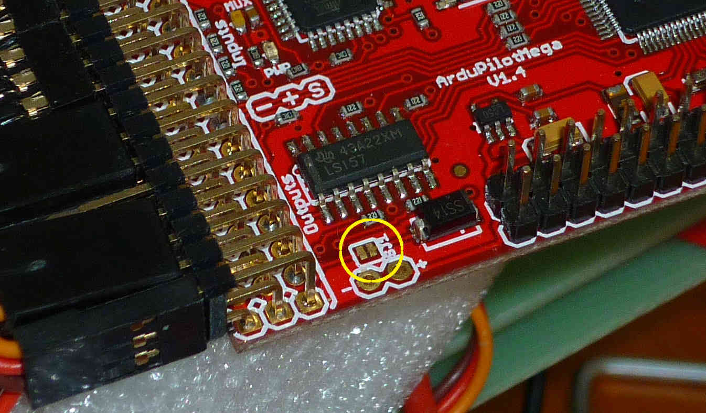
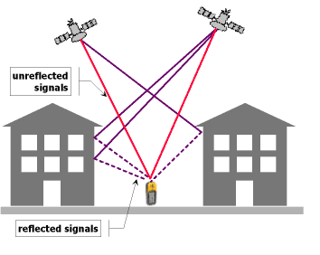
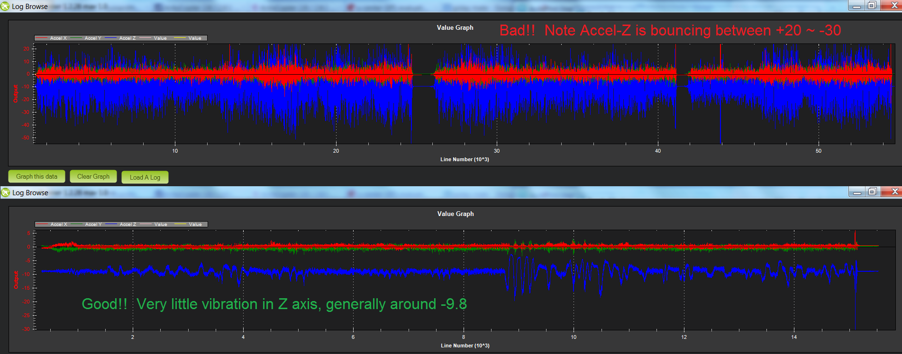
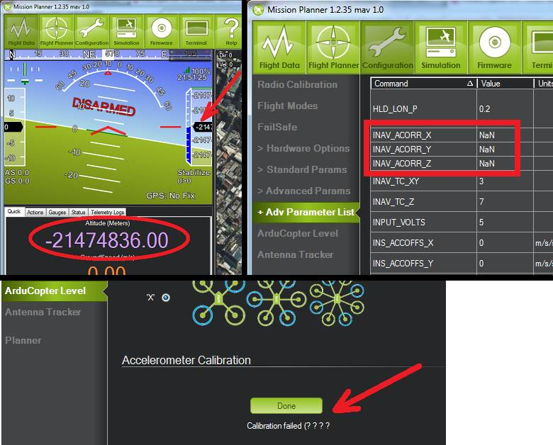

Archived: Troubleshooting¶
Warning
This page has not been reviewed by the wiki approver team. It appears to contain a lot of out of date and unverified material - June 2015.
I can’t get the motors to run and/or can’t arm the ESCs¶
This can be due to a number of mistakes:
Have you completed the mandatory hardware configuration steps described here?
Are you in Acro, Stabilize or Simple mode? As a safety measure, the motors won’t arm in other modes.
Are you using the APM 2.5 Power Module to power the APM board, as recommended? If not, and you’re using one of your ESCs via the PDB to power the board, make sure the JP1 jumper is on.
Are you sure you’re arming them right? When the motors are armed, the arm LED (green on APM1, yellow on APM 2) on the IMU will turn solid after the IMU calibration flashing (about 5 seconds). Review the arming guide to make sure you’re doing it right.
Are your Yaw or Throttle channels reversed on your transmitter? Try moving the Yaw stick to the far left, instead of the right. If that works (green LED tuns solid after the IMU calibration, your Yaw is reversed. If not, try the same with the Throttle channel: push it to max and try full right yaw from there. If that works, your Throttle channel is reversed.
Is your RC gear in Mode 2? If not, you’ll need to move the right stick (yaw) to the right and the left stick (throttle) to the top. (Or just switch back to Mode 2)
Some ESCs are thrown off by some startup signals in Copter 2.x. Try plugging in a USB cable first, to boot the board, and then plug in your LiPo after it’s already up, or just ensure that the four-wire cable from your APM board to your power distribution board is disconnected during regular startup. See details here.
It’s possible you’ve changed your throttle trim settings since you did your initial radio calibration. Trim the throttle down a few notches and try arming again.
Some ESCs have a minimum low threshold before they will arm. If you need to, trim down your radio throttle and redo radio calibration.
Redo your radio calibration in the Mission Planner. Make sure that the throttle channel (Ch 3) is being read properly and the values are around 1100 (low) and 1900 (high), more or less. Remember that your LiPo must be plugged in to power the RC gear.
If you’ve checked the previous things, it may be that you need to recalibrate your ESCs. Do it the manual way (here to be sure).
My APM 2 is locking up¶
The cause is probably that the dataflash card not initializing correctly. To verify this is the problem, take it out and try to power your apm 2 again.
If this is the case, there is an easy fix. Put the dataflash back in, and power the board up while looking at the terminal screen. It will reformat the card (this will take A WHILE). Leave it plugged in for 2 min. After that you should see a “ready to fly” message. You only have to do this once.
Copter tilts/flips over or wobbles crazily when I try to take off.¶
This almost always means that you’ve configured it or set it up wrong. Check the following:
Is the APM board facing forward and in the direction of forward motion (towards the forward arm in + mode and between the arms in x mode)?
Have you set your quad orientation right in the setup process: + or x?
Check that all the motors are hooked up right, turning the right way and the pusher/puller props are on the right motors and oriented the right way.
Check the signal wires on the power distribution board to make sure they are oriented correctly. If you’ve reversed two, it will cause Copter to flip. This should be noticeable by doing the hand test as well. (It should have also shown up in the Motors test above)
Check that your props can’t turn on their motor shafts, as if they weren’t tightened down enough. If one can, despite its prop being tightened, that may mean that its motor shaft has been pushed down into the motor too far for the prop mount to get a grip. Take off the prop and and use a small allen wrench to loosen the little set screw that holds the shaft onto the motor. Then with pliers pull the shaft out until it’s the same height as those of the other motors. Then tighten the set screw, and put the prop back and tighten it up again.
Was the quad stable and flat for the whole calibration routine at startup? Was it stable and flat during the setup process? (If need be, do it again)
Did you calibrate your ESCs? They should all start together when you advance the throttle. If need be, do it again manually, as described here.
Did you setup and test your radio? Run test/radio to see. Pitch, Roll, Throttle and Yaw should all be 0 or near zero (60 or less). Move the pitch and roll stick to the lower right, you should see approximately 4500, 4500 in Channels 1 and 2.
Have you checked all your sensors in the Mission Planner to make sure the hardware is working right?
My overpowered copter rockets into the air can’t be brought down unless I cut the throttle¶
Very over powered multicopters can require so little throttle to hover that even the minimum throttle (13%) is enough for them climb. In addition, the default Rate roll/pitch gains, which are meant for weaker copter, are too high for a powerful copter and can lead to roll/pitch instability. The Copter firmware may try to compensate for this roll/pitch instability by increasing the overall throttle which can lead to the copter climbing further (Note: in this particular case Copter increasing the overall throttle is counter-productive but in a properly tuned quad it helps in cases where there is a motor failure).
The possible solutions are:
add extra weight to your frame to bring the hover throttle closer to mid stick
reduce the THR_MIN parameter (default is 130 or 13%) to the lowest value that will still keep all motors spinning reliably
set the rate roll/pitch gains low (perhaps 1/2 the default) during the first flight and increase them from there. Consider using the CH6 tuning feature to allow you to tune your roll/pitch gains for the first few flights.
My copter motors spin but the copter wont take off (or motors may not spin at all)¶
While there are a few different reasons for copters to be perceived as underpowered, this condition applies to motors that simply aren’t spinning fast enough (if at all!) to generate the lift needed, even though you know they can spin faster. Some instances discovered recently showed someone had accidentally imported the wrong parameter file into their copter from the 3D Robotics Aero, and when they then loaded the correct parameter file, the THR_MAX parameter was left unchanged.
Check the following:
Connect to the copter via your GCS
Go to Full Parameter List
Examine the THR_MAX parameter and make sure the value is between 800 and 1000. The default is 1000.
FYI: The 3D Robotics Aero preset param file sets this to 80.
If the THR_MAX parameter is less than 800 and you don’t recall making this change, set the parameter to 1000 and Write Params out to the copter
My radio setup isn’t reading the RC channels right or hangs¶
Check the following:
Click on that Calibrate Radio button. That will start the measurement process.
Are you sure your receiver is getting power and is paired with your transmitter (it should show a solid green light). Make sure your transmitter is on!
If you assembled the board yourself, double-check your soldering! A tiny short on the APM board could disable all the channels.
We’ve had some reports of problems with older FM RC gear and even the occasional digital receiver, for reasons that are not clear (most likely low voltage output). Can you try a different receiver? This at least will eliminate that possibility.
We’ve also had reports of people having trouble with Spektrum radios, which have a funky binding process. This is what works: To bind the receiver and telemetry (TM1000+AR8000 to DX8) module, connect them both together(TM1000 to AR8000). With the transmitter off (DX8 off), press the tiny button on the side of the telemetry module (TM1000) and power the receiver (plug the LiPo batteries but do not plug the 4-wire connection). Both the receiver and telemetry module will start to blink (if they do not blink TM1000 is no good). When that happens turn on your radio holding the trainer/bind button and it will bind (stay at least 10ft away). Make sure that when it binds it says something like “binding dsmx —— receiver with telemetry”. You may have to do this twice if it doesn’t pick up the telemetry module the first time.
Check your cables! The signal wire should be at the top, and ground at the bottom.
Finally, if all else fails, try to narrow down the problem. First, check that the receiver is working right by plugging a servo into the output you’re testing and making sure that it’s outputting a good signal. Then plug one known-good RC channel into the APM input channels, from 1-7, one at a time and see if any are read. If some channels are read and some are not, you may have a soldering error or may have fried one or more inputs.
If you still can’t diagnose the problem, contact the customer support from the store you bought it from.
My Copter flies okay, but it tends to tilt one way or another¶
Make sure the CG (center of gravity) of the copter is dead center. Then run the level command on a flat surface. (hold disarm for ~15 seconds to invoke.) You can also fly in auto-trim mode in a windless (important!) environment–any wind will cause the changes you make to work against you when the quad rotates 180°. Hold arm for ~ 20 seconds to fly in auto-trim mode for about 45 seconds. It will exit auto-trim automatically and fly normally. (Don’t worry about counting out the time, just wait for the flashing lights to enter either mode.
You can use your radio pitch and roll trims, but remember to re-center them when you set up your radio with the config tools. I’m not a fan of trimming the radio for quads, but NEVER, NEVER trim yaw. (Quads are also susceptible to drafts. They will need constant correction unless you install an optical flow sensor. One day…)
My Copter Moves In a Direction even though the Stick is Centered¶
It is very important that the RC Channel 1 and 2 Trim parameter values (for the Roll and Pitch axes) are equal to the PWM value displayed in Mission Planner for the stick in its center position during Radio Calibration.
To check this Start Mission Planner, connect and go to the Advanced Parameter List and write down the parameter for RC Trim PWM (HS1_TRIM) and RC Trim PWM (HS2_TRIM).
Now start up the radio Calibration function in Mission Planner and turn on your RC Transmitter.
With the Roll and Pitch Stick centered, the values of the channel 1 (roll) and channel 2 (pitch) PWMs should be the same as the values for the parameters you wrote down above.
If they are not recalibrate the radio.
The HS1 Trim value must match the Live stick centered Roll value and the HS2 Trim value must match the live stick centered Pitch value or the autopilot will think your stick is not centered when it is.
Make sure the CG (center of gravity) of the copter is dead center.
Then run the level command on a flat surface. (hold disarm for ~15 seconds to invoke.)
You can also fly in auto-trim mode in a windless (important!) environment–any wind will cause the changes you make to work against you when the quad rotates 180°.
Hold arm for ~ 20 seconds to fly in auto-trim mode for about 45 seconds.
It will exit auto-trim automatically and fly normally. (Don’t worry about counting out the time, just wait for the flashing lights to enter either mode.
Avoid it if possible but if you have to you can use some radio pitch and roll trims
NEVER use any radio trim for Yaw.
The quad always wants to yaw to the right or left when I take off¶
This is usually due to an airframe that it out of tune, either with one motor tilted slightly or the weight balance not centered. Typically, the bad behavior is that the quad will always yaw by a certain amount, typically around 30-45 degrees on takeoff, but will stay in that direction. This is because the mechanical asymmetry of an out-of-tune quad is forcing the yaw, and the limit is just how long it take for the P term in the AC2’s PID equations to grow and stop it.
Although you can adjust those terms in the Mission Planner’s PID configuration screen, the best solution is to solve it at the source. Eyeball each motor and see if it or the arm it is one is slightly tilted, and bend it back to vertical if so. Also ensure that the battery is centered on the quad and the center of gravity of the vehicle is as close to the center of the APM board as possible. It’s also a great idea to redo the ESC calibration routine just in case.
Also make sure that you’ve got your forward-rotating and counter-rotating props on the right motors, as shown here.
The quad always wants to yaw when I pitch or roll¶
Your compass may need calibrating. AC2 calibrates while flying to take the magnetic fields of your motors into account. You must disarm the motors at the end of your flight to save your calibration to EEPROM. It usually takes 1-2 flights before the calibration makes a difference.
You must use a compass in conjunction with a GPS. If you disable your compass, please disconnect your GPS or you will have random Yaw hold issue.
My copter flies well, but then dips a motor arm in a fidgety manner while hovering¶
The most likely cause of this is your bullet connectors. After your initial setup, when you test motor direction and electrical connections, westrongly recommend that you cut off the bullet connectors and directly solder the motors wires to the ESC wires. That way is vibration-proof and will lead to much more reliable operation.
If your wires are soldered without bullet connectors and you still see this issue, there are some other things that can cause this problem. Your motor may be going bad: either the bearings are going or your shaft is horribly bent. A motor with bad bearings takes more power to spin. In that situation, the ESC could be cutting out to protect itself. Or it maybe flying slow enough to stall the motor. Attach a current sensor between your battery and the motor and test the difference between a good motor and the bad one. If you are seeing higher draw in the bad one, replace or fix it.
Another possible cause is the THR_MIN parameter’s default of 130 is too low for your motors or ESCs. The THR_MIN parameter controls the minimum throttle that will be sent to the ESCs/motors to ensure they keep spinning while your throttle is above zero. If this parameter is too low it is possible for your motors to momentarily stop leading to a twitch. Try increasing this parameter to 150. You should be careful not to set this parameter too high (i.e. >150 especially on a high powered copter).
{kind=link}
One of my motors started shaking and then burned out!¶
Motors will typically twitch once per second or so (often with a beep) while they’re waiting for a signal. That’s normal. But sometimes, if you have not followed the warnings and disconnected the four-wire signal cable, they may vibrate rapidly when you reset your board. This is a rare problem that can crop up with certain ESC types that don’t handle out-of-range signals well (it’s a problem with the Arduino bootloader during bootup, so there’s not much we can do about it). But it can always be avoided by following the advice of this warning, which is liberally sprinkled throughout the manual!
The APM board works when it’s plugged into the USB, but not when it’s powered by the RC rail (ESC/Lipo)¶
APM allows for both RC power or a separate battery run through APM’s built-in power regulator as described here. A solder jumper called SJ1 determines which is used. By default from the factory, that jumper should be soldered which means APM will be powered by the RC rail.
If for some reason, connecting power to the RC rail does not power your board, check to see if that jumper is soldered. If it isn’t, as shown below, just solder a blob of solder over the two pads to connect them.
{kind=link}
In the “raw sensor view” of the Mission Planner, the Z accelerometer reading is always 1000, not 0, when it’s on the bench¶
That’s normal. The Z accelerometer is showing the force of gravity (which is an acceleration, as you’ll recall from high school physics). If you turn the quad upside down, you’ll see that it reverses.
I can’t connect with the Mission Planner over Xbee¶
First, remember that you cannot use wireless telemetry with APM 2 while the USB cable is plugged in (they use the same port). Make sure it’s unplugged.
Check that you’ve switching the Mission Planner to the COM port assigned to your Xbee that’s connected to your PC and set the baud rate to 57600.
Ensure that you’ve gone through the full Xbee configuration process described here. Run the test code at the bottom of that page to ensure that your Xbees are communicating. Remember that the Xbees must be programmed in X-CTU to run at 57k.
If your Xbees suddenly stop working, it could be that a loose cable has led to a signal glitch that bricked the airborne one.
I can’t connect with the Mission Planner with the 3DR Radios¶
Remember that you cannot use wireless telemetry with APM 2 while the USB cable is plugged in (they use the same port). Make sure it’s unplugged.
Check that you’ve switching the Mission Planner to the COM port assigned to your 3DR radio that’s connected to your PC and set the baud rate to 57600.
I’m having trouble connecting via MAVLink over USB¶
Double check that you’ve selected the right COM port and baud rate for USB (115200). Also double check in your Windows Device Manager which COM port your APM has been assigned to. It will be listed under Ports.
Did you use the MP installation program, which installs the drivers, and did it complete successfully?
Have you loaded flight firmware (Copter or Plane) to APM?
Did you press Connect in the MP?
Copter ESCs keep beeping¶
Have you set up your RC input in the Mission Planner setup process?
Check that your RC radio is talking properly to its receiver (typically, that will be shown by a green light on the receiver).
If those two check out, you probably just need to calibrate your ESCs (even if you’ve done that before, if you’ve erased your EEPROM and done a reset, you’ll need to do it again. It’s an easy procedure and the instructions are here.
Check that your radio channels are in right order (cabling and/or Mode-1, Mode-2)
Some ESCs are thrown off by some startup signals in Copter 2.x. Try plugging in a USB cable first, to boot the board, and then plug in your LiPo after it’s already up, or just ensure that the four-wire cable from your APM board to your power distribution board is disconnected during regular startup. See details here.
I’m using a MediaTek GPS, and although the module’s blue lock LED goes solid, APM is not showing a lock or I’m getting “No GPS” on the Mission Planner display¶
I’m also not getting GPS data in my telemetry.
Solution:
There are a few things that could cause this. First, make sure that your input voltage to APM is not too high. It should be in the range 5-5.4v. Do not power the board at 6v.
Second, ensure that you’ve selected the right MediaTek version in the config file. If you bought your module from the DIY Drones store before December, 2010, it had version 1.0 firmware: select GPS_PROTOCOL_MTK in the config file. If you bought it after that, it as version 1.6 firmware: select GPS_PROTOCOL_MTK16 in the config file.
Finally, if things still aren’t working, check your cable. Cables longer than the short one that ships with the GPS module tend to have thinner wires that can break.
I’m not getting GPS lock at all¶
First, note that you will probably only get GPS lock outside (if you’re very near a window or are lucky enough to have strong GPS signal and a radio-transparent roof, you may be able to get lock inside). For a cold start (power on), it make take three minutes or more. If you’re just hitting the reset button after lock has been achieved, it should take less than a minute.
If you can’t get GPS lock outside after many minutes(the blue LED on the MediaTek module keeps blinking), you may have a defective module. If the module shows lock, but the red APM GPS LED is still blinking, you either have a bad cable or an older MediaTek module that needs to have its firmware updated.
If you have a uBlox module and APM is not showing lock, you may not have ordered the module preprogrammed for ArduPilot from the DIY Drones store (you had to select that option). In that case, program it yourself with the instructions here.
I want to load the code in Arduino, but I’m having trouble¶
First, ensure you’ve downloaded the latest AC2 code and are using the latest Arduino (at least 022).
If you’re getting compile errors, that means that you haven’t told Arduino where your libraries are properly.
If you’re getting avrdude sync error message in the Arduino status bar), go through all of the tips here.
My Copter just won’t rise/lift off¶
If you have a problems on getting your Copter up from the ground, check that you propellers are mounted correct way.
Official Copter propellers are not symmetric and they need to be mounted proper way. If you look close to center mounting hole, there are small texts saying 10x45 or 12x45. There texts needs to be upside.
If text is on downside, your Copter cannot lift properly.
The props that came with early version of the 3D Robotics Copter were also of uneven quality and some would flex too much under load, reducing lift. If you have these (black and more flexible than most props), you should replace them with APC or equivalent props or contact 3D Robotics for a replacement.
My Copter feels sloppy on roll or pitch axis¶
Both of roll and pitch axis should give to you exact or close to similar response when doing hand tests. If one of the axis does not respond as expected, check your PID settings and you can try to upload firmware again.
Firmware upload might be successful but due internal timing issues some of the code is not written properly and this can cause unstableness on your Copter.
I’ve got a tricopter and I’m having trouble with the yaw¶
Please see the tips here.
The Mission Planner’s HUD display moves around even though my copter is motionless¶
As of 2.9 we’ve enabled a feature that uses GPS velocities/accelerations to compensate for centrifugal forces. It should not cause you any issues in flight but you can disable it by setting the AHRS_GPS_GAIN to 0 through the Mission Planner’s Advanced Parameters List if it makes you uncomfortable. Here is a video demonstrating the problem and the explanation as to why it happens.
My copter’s is moving a lot on the Mission Planner map even though it’s sitting still in my house¶
a GPS will rarely give an accurate position while indoors or near walls due to multipath-ing. If you go outside you should see that it settles down.
{kind=link}
In Alt-Hold or loiter my copter is very bouncy or takes off into the sky¶
Copter uses the accelerometers heavily for calculating altitude and climb rate. Vibrations from the motors can cause the accelerometer values to become very noisy and throw off the altitude estimates. The solution is to reduce sources of vibration from your frame (bent prop adapters and motor shafts, replace EPP props with APC) and remove hard connections between the frame and APM by using vibration dampening products such as DuBro foam.
As of version 2.9 of Copter, inertial navigation is used to maintain altitude and in 2.9.2 horizontal position as well so vibration truly needs to be minimized. A small pad (1/2 to 1”) of Kyosho Zeal tape under each corner of the autopilot should get vibration low enough.
Or you can use a standoff with an extending screw 1/10” outboard of each corner of the autopilot and suspend it with four 1/16” O-rings of appropriate diameter such that when folded over through the autopilot they just hold the board without movement, but also not in much tension.
When a flight log is checked in RAW mode, X,Y and Z hovering ACCELs vibration on a log graph should at least be in the + to - 5 range and either of the above techniques can get them down to the plus to minus 1 range if they are just right.
You can graph your Z-axis vibrations by enabling the “RAW” message type in the dataflash, then take a short flight in Stabilize mode and finally download the logs and graph them with the mission planner. Below is an example of an extremely badly vibrating copter (top) and a nearly perfectly smooth copter (bottom). The Z-axis vibrations should not move up and down more than -5 to -15 or alt hold will not function correctly.
{kind=link}
There is a good discussion here re vibration dampening.
My copter slowly rises or descends when I enable Alt-Hold or Loiter¶
The throttle deadband when in alt-hold or loiter mode is from 40% ~ 60% of the throttle. If you have an overpowered or underpowered copter then when in stabilize mode the throttle required to maintain a hover may be outside this range. So when you engage alt-hold or loiter your throttle is outside of the deadband and Copter thinks you want to climb or descend. The simple solution is to move your throttle back to centre as you engage alt-hold. A permanent solution is to modify the THR_MID parameter through the mission planner’s Adv Parameter List screen. If your copter hover at 40% of throttle stick when in stabilize mode, make THR_MID = 400. If it hovers at 60% of throttle make the parameter 600, etc.
Mission planner displays enormous “Distance to Home” or “Dist to WP”¶
The “Dist to WP” (distance to waypoint) default to -1 when you do not have a waypoint set. Because of a display issue the mission planner displays this negative number as 65535. It will display a proper number as soon as you enter loiter mode, guided more or start a mission. This display issue will be fixed in a future version of Copter.
The “Distance to Home” is the distance from the mission planner’s home location (which is different from the Copter’s home location which is set when you arm the motors). You can reset the mission planner’s home location to the copter’s current location by clicking on the “Home Location” link in the Flight Planner screen. Below is a video explanation and how resolve it.
Mission Planner displays Altitude of -21 million or NaN appearing in Advanced Parameter list¶
You should not attempt to fly your copter in this state because AltHold will not function at all. You should instead go into the Mission Planner’s Terminal screen and reset your parameters by typing “setup”, “reset”, “Y” and rebooting your APM.
The cause is a bug in the 2.9.1 accelerometer calibration routine that can save NaN to the AHRS AHRS Trim parameters if the calibration routine fails. This feeds into the inertial navigation routines and results in the bizarre altitude display in the mission planner. Note: you will likely have seen “Calibration failed (????)” after you attempted to calibrate the accelerometers values.
{kind=link}